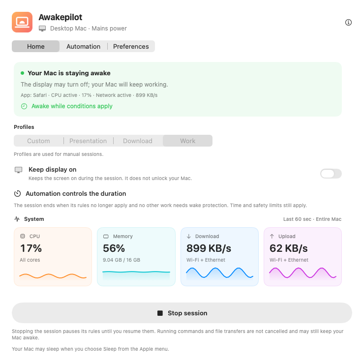
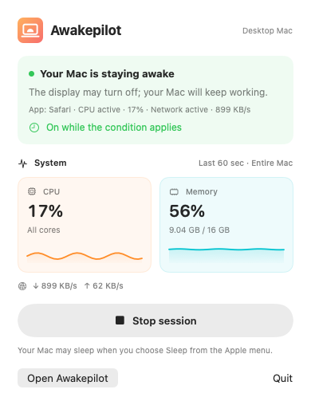
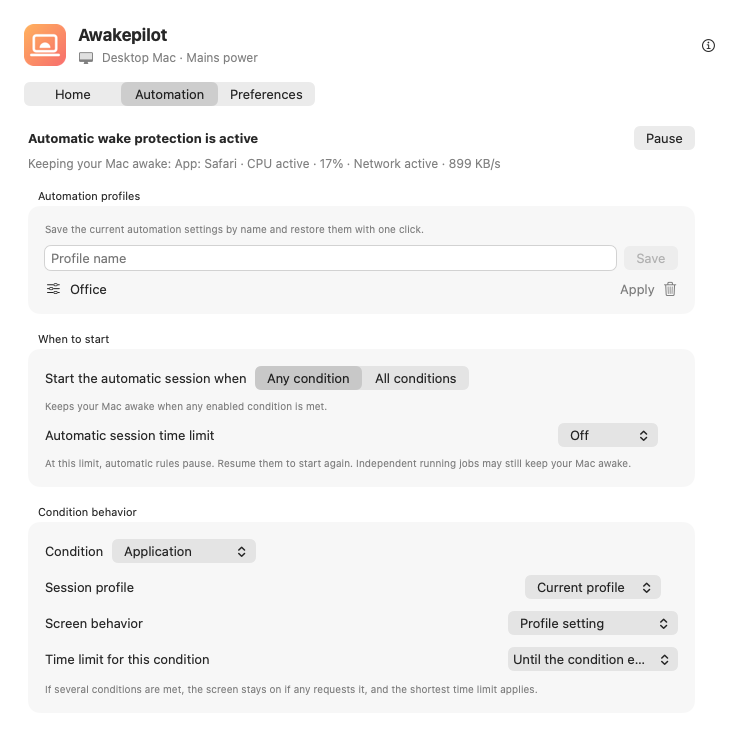

Flexible wake sessions
Stay awake indefinitely, for a duration, or until an exact date and time.
15m1h2h∞
Awakepilot follows the work itself: apps, terminal processes, system activity, Wi-Fi, VPNs, schedules, displays, power, and external drives.


Start a session instantly, or let Awakepilot decide from clear conditions and return normal sleep when the work ends.
Stay awake indefinitely, for a duration, or until an exact date and time.
Watch CPU, memory, download, and upload activity through clear live graphs.
React to apps, processes, schedules, activity, Wi-Fi, VPNs, power, displays, or drives.
Respect power adapters, battery thresholds, UPS state, and display preferences.
Keep selected writable external drives active with a small, controlled local heartbeat.
See exactly when automation started, which condition changed, and when normal sleep returned.

Awakepilot shows the exact reason your Mac is staying awake. When every condition ends, normal sleep behavior returns automatically.
Choose what Awakepilot watches, what it should do, and when it must stop. Every decision remains visible.
Start on the studio network or work VPN. Keep the display available for calls and stop at the safety limit.
Follow render and export processes, keep the screen off, and release the session as soon as the final process exits.
React when an archive disk mounts, protect the copy, and use Drive Alive only on the selected writable volume.
Awakepilot combines human choices with real system conditions. Use one signal, or require an entire set to be true.
Awakepilot refreshes one tiny marker on the writable external drives you choose. It never overwrites another app’s file, and removes its own marker when Drive Alive is disabled—even after a drive reconnects.
A wake utility should never leave you guessing. Awakepilot records meaningful transitions without flooding the timeline with every live CPU or network sample.
Follow network activity or a mounted backup drive, then stop automatically.
Track the actual terminal process or wrap the command in a Wake Lease.
Apply a display-on profile only while the presentation condition is active.
Keep the Mac reachable with power and duration safeguards still enforced.
No account. No ads. No analytics. No telemetry. Awakepilot stores its settings locally and only contacts GitHub to check for updates.
Read the privacy details →Download the signed and Apple-notarized universal build for macOS.
Drag to Applications. No account or subscription required.